|
|
|
In developing an ARCH model, you will have to provide three distinct specifications—one for the conditional mean equation, one for the conditional variance, and one for the conditional error distribution. We begin by describing some basic specifications for these terms. The discussion of more complicated models is taken up in “Additional ARCH Models”.
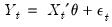
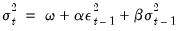 is the one-period ahead forecast variance based on past information, it is called the conditional variance. The conditional variance equation specified in (27.2) is a function of three terms:
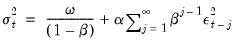
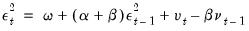
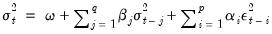 in equation Equation (27.2) represent exogenous or predetermined variables that are included in the mean equation. If we introduce the conditional variance or standard deviation into the mean equation, we get the GARCH-in-Mean (GARCH-M) model (Engle, Lilien and Robins, 1987):
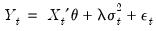
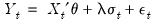
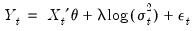 , in the variance equation:
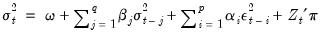 . There are three assumptions commonly employed when working with ARCH models: normal (Gaussian) distribution, Student’s t-distribution, and the Generalized Error Distribution (GED). Given a distributional assumption, ARCH models are typically estimated by the method of maximum likelihood.
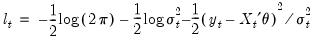
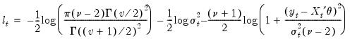
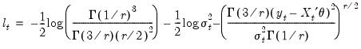
 .
. plus 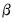. In many applied settings, this root is very close to unity so that shocks die out rather slowly.
plus 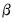. In many applied settings, this root is very close to unity so that shocks die out rather slowly. or
or  greater than 1 where
greater than 1 where  is the order of the autoregressive GARCH terms and
is the order of the autoregressive GARCH terms and  is the order of the moving average ARCH terms.
is the order of the moving average ARCH terms.  is:
is: is specified in one of the forms above.
is specified in one of the forms above. . The GED is a normal distribution if 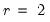, and fat-tailed if 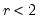.
. The GED is a normal distribution if 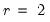, and fat-tailed if 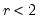.